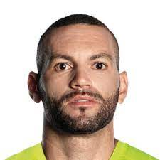
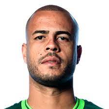
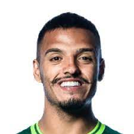
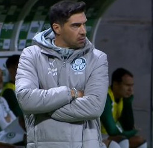

Explicar a emoção de ser palmeirense a um palmeirense é desnecessário,- Joelmir Beting
e a quem não é palmeirense é impossivel.
Quando surge o Alviverde imponente
No gramado em que a luta o aguarda
Sabe bem o que vem pela frente
Que a dureza do prélio não tarda
E o Palmeiras no ardor da partida
Transformando a lealdade em padrão
Sabe sempre levar de vencida
E mostrar que de fato é campeão
Defesa que ninguém passa
Linha atacante de raça
Torcida que canta e vibra (2x)
Por nosso Alviverde inteiro
Que sabe ser brasileiro
Ostentando a sua fibra
Elenco completo
  
